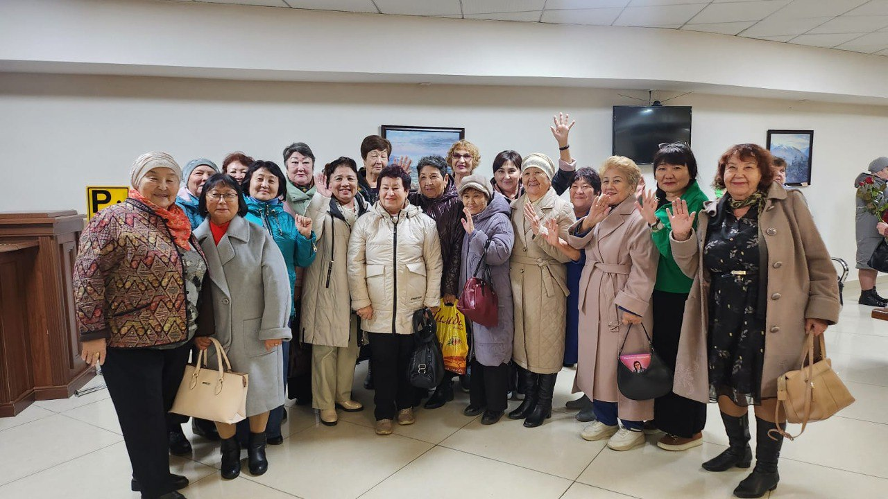

1 қазан 2024
Біз үшін бұл күн әрдайым ерекше мәнге ие. Біз аға әріптестеріміздің еңбегін құрметтейміз және оларға шынайы ризашылығымызды білдіреміз. Жыл сайын ардагерлердің жетістіктері мен өмір жолын атап өту үшін оларға арналған іс-шаралар ұйымдастырамыз. Бұл тек құрмет қана емес, сонымен қатар жаңа жетістіктер қарсаңында тұрған ұрпақ үшін құнды тәжірибе мен білім алуға мүмкіндік.
Биыл біздің орталықтың ардагерлері «AQNIET» денсаулық сақтау қызметкерлері кәсіподағының қолдауымен облыстық драма театрында театр маусымының салтанатты ашылуына шақырылды. Бұл кеш ардагерлеріміздің қайта жиналып, естеліктерімен бөлісуінің, бірлік пен жылулық атмосферасын сезінуінің тамаша мүмкіндігі болды.
"Біз орталықтың әкімшілігі мен кәсіподағына драмалық театрдағы кездесуді тамаша ұйымдастырғаны үшін алғыс айтамыз. Біз кездесіп, жағымды эмоциялармен бөлісуге және қатысушылардың арасында бірлікті сезінуге қуаныштымыз. Ұжымға ынтымақ, ал баршаңызға денсаулық, отбасыларыңызға амандық және бақыт тілейміз ", - деп өз әсерлерімен бөлісті ардагерлеріміз.
Осындай жылы әрі маңызды күн бізге қарт адамдарға қамқорлық жасаудың маңыздылығын, оларды шабыттандырып, құндылықтарды келесі ұрпаққа жеткізе білуді еске салады. Біз ардагерлерімізді бағалауды және қолдауды жалғастырамыз, өйткені олардың тәжірибесі мен даналығы - бүкіл қоғам үшін баға жетпес сый.